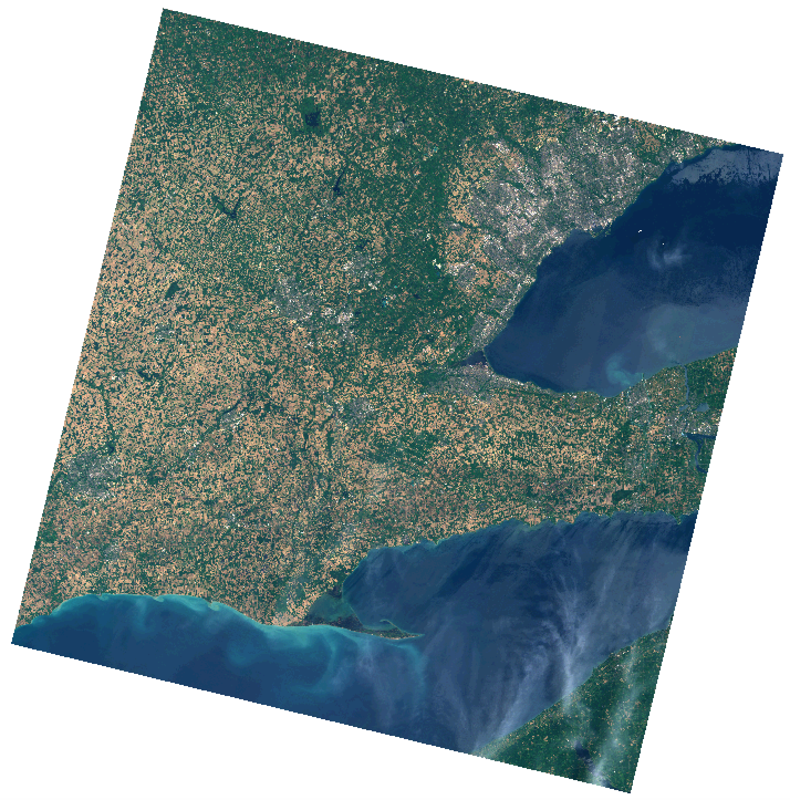

Part 1: Evaluating Training Site Data
If you haven't already done so, update your version of the Whitebox Workflows Python library by typing the following line at the terminal:
pip install whitebox-workflows -U
Multi-spectral image classification involves two distinct activities. The first activity is the recognition of categories of real-world features in the landscape, e.g. 'deciduous forests'. The second activity in all multi-spectral classifications involves labeling pixels within an image data set. With supervised classification methods, the user first identifies real-world land-covers, examines the images to find training areas to typify the 'spectral signatures' of these features and then uses the signatures to label all of the remaining pixels in the scene. Unsupervised classification techniques rely on statistical clustering methods (e.g. k-Means clustering) to find groups, or clusters, of similar pixels with respect to their spectral properties. After this initial clustering phase, the user then has the task of relating the statistically defined spectral classes to real-world land-covers. Both approaches to image classification require a substantial amount of human effort and judgement to identify land-covers within the image scene. The difference is that with supervised classification techniques this human component occurs early on in the process, while unsupervised classification methods require effort after the automated classification step in determining the physical meaning of each statistically defined cluster. Generally, supervised classification techniques are preferred because the image analyst has greater control over the classification (e.g., I may know that I want to classify water, urban, forest, agriculture), whereas, the analyst has very little control over the clusters that are created by unsupervised methods. Unsupervised classification techniques are useful as an initial exploratory tool and when the analyst is unfamiliar with data or the landscape being analyzed. In this lab, we'll be performing different types of supervised classifications.
Using QGIS (or ArcGIS if that is your preference), display the natural_colour.tif image, contained in the decompressed Lab 4 data folder, which you should have downloaded from the CourseLink site. You should find the the image looks something like the following:

This is the same cloud-free Landsat 9 Level-2 (reflectance) scene of Southern Ontario that we've used in previous lab exercises. In addition to this colour composite image, the Lab 4 data folder should also contain bands 1 - 7 (LC09_L1TP_018030_20220614_20220615_02_T1_B1.tif, LC09_L1TP_018030_20220614_20220615_02_T1_B2.tif, LC09_L1TP_018030_20220614_20220615_02_T1_B3.tif...).
Display the vector training_data.shp, changing the symbology using a 'Categorized' scheme specifying the CLASS attribute as the Value. This vector file contains polygons that represent exemplars of various land-cover types that are common in the scene.
| Land cover |
|---|
| Forest |
| Industrial/Commercial |
| Other Crops |
| Residential |
| Soil |
| Water |
| Wheat |
1.1. What are some considerations that should be made when selecting good training sites for image classification? (3 marks)
In reality, we are generally more interested in mapping land-use (what people do on the land-surface) rather than land-cover (the type of material present on the landscape). Multi-spectral image classification can tell us about land-cover based on the reflectance characteristics of the land-surface. For example, we have training classes for Wheat and Other Crops, which are both land-covers associated with an Agricultural land-use. Land-uses may be very heterogeneous in their land-cover and spectral characteristics. Ideally, land-cover classes, however, are more uniform in their spectral characteristics and are separable from other land-cover classes in some regions of the spectrum. To evaluate whether or not this is the case for our land-cover classes and training data, we will use the Whitebox Workflows evaluate_training_sites function. Run the following script and take a look at the output file (training_site_eval.html), which should be automatically displayed in your browser after the script has completed.
evaluate_training_sites.py
import os
import whitebox_workflows
wbe = whitebox_workflows.WbEnvironment('floating-license-ID') # Initialize Whitebox
try:
# declare your working directory as a variable
wbe.working_directory = "/path/to/lab/data" # BE SURE TO UPDATE THIS
assert(os.path.isdir(wbe.working_directory))
wbe.verbose = True # Let's print the output of each tool
# Read the 7 bands of data into a variable named 'band_data'
print('Reading band data...')
band_data = wbe.read_rasters(
'LC09_L1TP_018030_20220614_20220615_02_T1_B1.tif',
'LC09_L1TP_018030_20220614_20220615_02_T1_B2.tif',
'LC09_L1TP_018030_20220614_20220615_02_T1_B3.tif',
'LC09_L1TP_018030_20220614_20220615_02_T1_B4.tif',
'LC09_L1TP_018030_20220614_20220615_02_T1_B5.tif',
'LC09_L1TP_018030_20220614_20220615_02_T1_B6.tif',
'LC09_L1TP_018030_20220614_20220615_02_T1_B7.tif',
)
# Read in the training data
print('Reading training data...')
training_data = wbe.read_vector('training_data.shp')
wbe.evaluate_training_sites(
input_rasters = band_data,
training_polygons = training_data,
class_field_name = 'CLASS',
output_html_file = 'training_site_eval.html'
)
print("Operation complete!") # Provide some sort of indication that the job is done.
except Exception as e:
print(f"Exception: {e}")
finally:
print(wbe.check_in_license('floating-license-ID')) # Check your license back in.
training_site_eval.html contains several box and whisker plots, one for each of the seven bands of imagery. Each plot shows the distribution range of reflectance values for each of the land-cover classes in the training data. The inter-quartile range defines the 'box', the vertical line within the box is the median reflectance, and the whiskers mark the minimum and maximum values in the distributions.
1.2. How similar are the distributions of reflectances for the two urban land-cover types, Industrial/Commercial and Residential? (2 marks)
1.3. Are there classes that you expect to be more difficult to accurately distinguish because of their overlap among all bands? Are there certain classes that you expect will have no issue being accurately classified owing to their wide separability in reflectance characteristics compared with the other classes? (3 marks)
1.4. Are there any classes where the range of reflectance values is comparably wider than other classes? What does this indicate about this land-cover class? Do you think that this characteristic could be problematic for classification and if so, what could be done to address the situation? (4 marks)